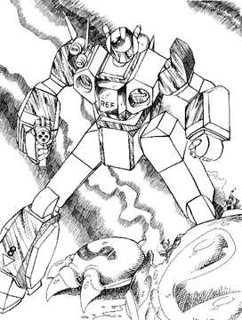

The following material is from
THE THIRD INVID
WAR, a fan supplement by
Dave Deitrich and
Chris
Meadows. Please feel free to use, copy, and distribute
it as you see fit. All we ask is that you give proper credit to us and do not
claim that it is your own work. Comments and suggestions are welcome.
This mecha was based on an original mecha design by Aaron Meadows
, Chris' younger brother.
THE VAF-8 ALPHA FIGHTER
BACKGROUND

The VAF-8 Transatmospheric Alpha Fighters were the standard Veritech
fighters of the REF during the Third Invid War. Designed on Tirol by
the engineers of Project Shadowchaser, the VAF-8 was the first original
mecha designed from the ground up around the new cloaking technology developed
to counter the Invid protoculture tracking technology. The original SF-7 Cloaking
Device had been outfitted on a small group of mecha, mostly VAF-6 Alphas and a few
Mk III Gladiator Destroids. These new mecha (the VAF-7A Alphas and Mk IV
Gladiators) were mainly technical experiments and were not really intended
for mass production or use in combat. However, the push to equip the REF
Jupiter mission with the latest technology necessitated these mecha being
included with the mission's warships, and most of the prototype units were
destroyed during the final battles of the Second Invid War.
During the lull following the Jupiter Mission's departure from Tirol, the
VAF-8 Alpha and VBF-2 Beta Fighters were perfected
and put into production. The VAF-8 was intended to be the next main fighter
for the REF, and as such was designed with mass-production in mind. The main
design of the fighter centered around two brand new systems in the
REF arsenal, the SF-10 Shadow Cloaking Device and the FF-3000
Fusion/Protoculture Variable Turbine Engines. The SF-10 was a more advanced
version of the shadow cloak intended to be more reliable and cheaper to
produce, although cloaking device production still remained the bottleneck of
the VAF-8 production line. The FF-3000 was a new high-efficiency engine
designed for use on transatmospheric fighters. The engine contained a
variable thrust system that could use either air intakes (like a ramjet) or
internal fuel supplies (like a rocket) to produce thrust. This made the mecha
transatmospheric; the Alphas could be launched from an orbiting starship,
engage in orbital combat, enter a planet's atmosphere to engage ground
targets, and then escape the planet's atmosphere to return to the starship
after the mission is complete. This engine fit in well with REF analyst
predictions that most future mecha fighting would be fought in terms of
orbital-to-ground engagements. Other improvements to the VAF-8 included an
increased SRM load, wing hardpoints for variable missile loads, and the new
GU-25 multipurpose gun pod.
After the Jupiter mission failed to report back from Earth, the threat of
continued warfare with the Invid began to resurface. Mass production of the
VAF-8 began in 2039, as the REF rebuilt and prepared for another possible
conflict. Initially there were 3 different models of the VAF-8; the VAF-8A,
VAF-8J, and VAF-8S. Although nearly identical in capabilities, the VAF-8A was
intended for use by standard pilots, the VAF-8J by low-ranking officers, and
the VAF-8S by squadron leaders. During the planning for the Icarus Recon
Mission in 2042, Colonels John Korcheck and Roger Harris requested a special
version of the VAF-8 for reconnaissance and electronic warfare. The REF R&D
department developed the VAF-8R Recon Alpha Fighter to fulfill that request.
The VAF-8R was slightly different from previous versions of the VAF-8, mostly
because of the advanced sensor systems equipped on the Alpha. In addition,
the VAF-8R was equipped with a copilot's station directly behind the pilot's
station. This copilot was not actually intended to help fly the plane, but
instead served to collect and correlate the massive amounts of data from the
mecha's sensors. These copilots, called Recon Equipment Operators (REOs),
were mostly intelligence officers who would analyze data and communicate it
back to the command ship while the pilot and his escorts engaged the enemy and
protected the VAF-8R.
Hundreds of VAF-8s were produced for the REF Icarus and Prometheus missions.
Due to the rush for production, many VAF-8s were sent into service without the
SF-10 cloaking device, which could simply not be produced fast enough to keep
up with demand. Roughly 60% of the fighters used by Icarus and Prometheus
were not equipped with SF-10 cloaking devices. Despite this flaw, the VAF-8s
served well during the Third Invid War. Even with the blockade created by the
Invid Orbiting Hives, many VAF-8 Alphas made
it to Earth to bolster the resistance forces there. However, attrition prevented
the numbers on Earth from ever becoming too high, as the Invid blockade made
spares and replacement parts hard to come by on occupied Earth.
The VAF-8 served as the major fighter of the REF (and later the Robotech
Guardian Forces) from 2040 up until 2058, when it was replaced by the VAF-9
Mark II. Even after production ceased, the VAF-8 remained a common fighter
inthe RGF arsenal for decades, commonly seen throughout Sentinels Alliance
territory until almost the end of the 21st century.
The VAF-8 series Veritechs have the sleek, angular lines of the VAF-6 Alpha
series, but are equipped with swing wings (as in the VF-1 series fighter) and
redesigned leg/engine units. The head of the mecha is located ventrally in
fighter and Guardian modes, and each wing contains a single hardpoint for
variable missile loads, both similar to the older VF-1 Veritechs. The VAF-8
series marks the return of the REF to distinctive head styles to indicate
rank. Though the head-mounted lasers are exactly the same for each model, the
head shapes are different and recognizable for each version of the Alpha. In
addition, each fighter has highlight colors and identification numbers painted
in different colors by model. The VAF-8A is color is blue; the VAF-8J is red;
VAF-8S is green. The rest of the mecha's color scheme is usually based on
where the unit is stationed; i.e. space Veritechs are often painted flat
black, desert Veritechs are painted with a light tan camouflage, etc. Some of
the shadow-equipped models are painted black with red canopies, perhaps out of
nostalgia or a whimsical sense of humor on the part of the factory
technicians. The VAF-8R has a slightly elongated and raised nose compartment
to accommodate the additional REO crew member, and a shoulder-mounted sensor
unit that contains many of the advanced sensor systems for the Recon Alpha.
VAF-8Rs are usually highlighted in white to distinguish them from 8As, 8Js,
and 8Ss. The VAF-8R uses the same head design as the VAF-8J Alpha.
SCHEMATICS
 Click on the icon to the left to view some pictures from the REF VAF-8 Alpha
Fighter maintenance guide, document REF-5482-344-4387.
Click on the icon to the left to view some pictures from the REF VAF-8 Alpha
Fighter maintenance guide, document REF-5482-344-4387.
RPG STATS
| Vehicle Type: |
Transatomspheric Stealth Veritech Fighter |
| Models: |
VAF-8A (Standard Model)
VAF-8J (Low-Ranking Officer Model)
VAF-8R (Reconnaissance Model)
VAF-8S (Squadron Leader Model) |
| Crew: |
One |
M.D.C. BY LOCATION
(1) Head 75
Head Lasers (2) 30
(2) Shoulder Sensor Unit (8R only) 55
(3) Main Body 400
Shoulders/Missile Pods (2) 100 each
Forearms/Missile Pods (2) 100 each
Hands (2) 60 each
Upper Legs (2) 120 each
Lower Legs/Thrusters (2) 120 each
Wings (2) 100 each
Tail Fins (2) 60 each
Reinforced Pilot's Compartment 200
Reinforced REO's Compartment (8R only) 150
Wing Weapon Pods (2) 50 each
GU-25 Gun Pod 100
- Destroying the head will destroy all optical enhancements and cause
penalties of -2 to strike, parry, and dodge. Main communications is
also destroyed for the fighter, though a backup radio system provides
the veritech with short-range radio communications. Radar is stored
in another area of the plane and is unaffected.
- Depleting the MDC of the sensor unit on the VAF-8R will destroy many of
the Recon Veritech's advanced sensor systems. The XR-A Doppler Radar,
Sonar, and Nightvision Optics are all lost.
- Depleting the M.D.C. of the main body will shut the mecha down
completely, rendering it useless. Be sure to note the special rules
regarding failure of the SF-10 cloaking device, listed in the Equipment
section.
SPECIFICATIONS
| Jet Mode: |
Mach 3.7 (2479 mph/3989 kmph) maximum. |
| Jet Cruising: |
About Mach 1.5 (1005 mph/1617 kmph) |
| Guardian Mode: |
Hover stationary to Mach 1.5 (1005 mph/1617 kmph) |
| Battloid Mode, Flying: |
Hover Stationary to about 400 mph (644 kmph). |
| Battloid Mode, Running: |
180 mph (290 kmph) |
| Battloid Mode, Leaping: |
100 ft (30.5 m) up or across without booster
assistance. 350 ft (106.8 m) with booster jets' assistance. |
| Height: |
34 ft (10.2 m) in Battloid mode
21 ft (6.3 m) in Guardian mode
15 ft (4.5 m) in Jet mode |
| Width: |
13 ft (3.9 m) in Battloid mode
23 ft (6.9 m) in Jet and Guardian modes (14 ft/4.2 m with wings in
swept position) |
| Length: |
39 ft (11.7 m) in Jet mode
32 ft (9.6 m) in Guardian mode |
| Weight: |
VAF-8A, J, S: 11.6 tons without missiles, 17.2 tons fully loaded.
VAF-8R: 13.0 tons without missiles, 18.6 tons fully loaded. |
| Cargo: |
VAF-8A, J, S: 8 cubic foot compartment behind cockpit for
personal items. VAF-8R: 3 cubic foot compartment behind REO's
compartment. Cyclone spaces can also be used for spare storage and
can hold up to 500 lbs. |
| Main Engine: |
FF-3000 Fusion/Protoculture turbine in each leg |
| Range: |
16 Protoculture cells will give the mecha an active combat life of
about two years. The mecha can operate on half as many cells (8)
for 12 months, but maximum speed is reduced by half and the mecha is
at -1 to strike. As a last resort, the mecha can operate solely on
fusion power, but maximum speed is reduced by 75%, the head lasers
cease to function, and the mecha is at -2 to strike and -2 to dodge. |
WEAPON SYSTEMS
- MM-70B MULTI-MISSILE SYSTEM: Similar to the MM-60 missile
launcher system
used in the VAF-6 and VAF-7 Alpha Fighters, the MM-70B retains the same
electronic systems but can include an additional 10 SRMs due to the
increased size of the VAF-8. A total of 70 short range missiles are
included; Shoulders: 8 each, Forearms: 12 each (6 on both sides of the
arm), Lower Legs: 15 each ( 3 launchers on each leg).
- Primary Purpose: Assault
- Secondary Purpose: Anti-Aircraft
- Missile Type: Standard RDF short-range missiles, usually high
explosive,
armor piercing, or plasma. A typical combat mix of missiles is 35 armor
piercing, 25 high explosive or plasma, 8 fragmentation, 2 smoke.
- Mega-Damage: Varies with missile type; typically 2D4x10 M.D.
- Rate of Fire: One at a time or in volleys of two, four, eight,
sixteen,
thirty or all. The number of volleys a character can fire per melee is
equal to his/her attacks. Remember, a volley, regardless of the number
of missiles, counts as one attack.
- Range: Varies with missile type; 1 to 5 miles.
- Payload: A maximum capacity of 70 short-range missiles. Mini,
medium and long range missiles can not be used.
- HEAD MOUNTED TWR-25 PULSE LASERS (2): 2 tirolian-built lasers
are mounted
on the head of the VAF-8 and can be used in any mode; fighter, guardian,
or battloid (similar to the old VF-1 Veritech). In combat the lasers are
limited to the number of attacks the pilot has, but they can also be used
in a continuous beam, making them useful for cutting or demolitions.
- Primary Purpose: Assault/Defense Weapon
- Secondary Purpose: Tool for Cutting
- Mega-Damage: 4D6, or 2D6 if only one is fired. The lasers can
also be
fired in a long continuous blast that lasts the entire round and does
2D6x10 M.D. However, this mode is unsuitable for combat purposes and
imposes a -2 to strike rolls to attack moving targets.
- Range: 4000 ft
- Payload: Unlimited
- WING HARDPOINTS: The VAF-8 has two hardpoints (1 per wing)
which can be
used to mount missiles and other ordinance for heavy assaults and
bombardments. Each hardpoint can mount 1 long range missile, 3 medium
range missiles, or one pod of mini-missiles. These missiles do NOT have
to be dropped prior to transformation into battloid mode; however, the
missiles cannot be fired in battloid mode because they are covered by
the tail fins of the mecha.
NOTE: VAF-8s found in the field will typically NOT be equipped with
missiles on their hardpoints, as these missiles are usually used up within
the first few minutes of combat.
- LONG RANGE MISSILES
- Primary Purpose: Heavy Assault
- Secondary Purpose: Anti-Spacecraft
- Missile Type: Standard REF long-range missiles, usually proton,
reflex heavy and reflex multi-warhead.
- Mega-Damage: Varies with missile type.
- Rate of Fire: One or two.
- Range: Varies with missile type; 500 to 1800 miles.
- Payload: One per hardpoint; two maximum.
- MEDIUM RANGE MISSILES
- Primary Purpose: Heavy Assault
- Secondary Purpose: Anti-Mecha
- Missile Type: Standard REF medium-range missiles, usually high
explosive, armor piercing, or multi-warhead.
- Mega-Damage: Varies with missile type.
- Rate of Fire: One, two, three, four, or six (all).
- Range: Varies with missile type; 50 to 80 miles.
- Payload: Three per hardpoint; up to 6 maximum.
- MINI-MISSILE PODS
- Primary Purpose: Assault/Defense
- Secondary Purpose: Anti-Personnel
- Missile Type: Any except plasma. Armor-Piercing is standard issue.
- Mega-Damage: Varies with mini-missile type; usually about one
mile.
- Rate of Fire: Volleys of two, four, or eight
- Range: Varies with missile type
- Payload: 15 per launcher; up to 30 maximum.
- STEALTH RECON PODS (2, typically used by the VAF-8R): The VAF-8R
Recon Veritech is usually equipped with two special electronic warfare
suites instead of missiles on the wing hardpoints. Called Stealth Recon
Pods (SRPs), these pods are actually remote-controlled robot vehicles
used for data gathering and reconnaissance, spy satellites, or beacons.
The SRPs are powered by miniaturized fusion reactors and contain NO
protoculture systems, making them undetectable by Invid protoculture
sensors. The SRPs contain an internal antigravity engine that allows them
to maneuver at will after being launched, or even return to the VAF-8R
after completion of a mission. The SRPs must be controlled by a human
operator (usually the REO) at all times, as they do not possess any form
of artificial intelligence guidance. Like the missiles, the SRPs do not
need to be ejected before the Recon Alpha converts into battloid mode.
- Primary Purpose: Intelligence-Gathering
- Pod M.D.C.: 15
- Range: Essentially indefinite (uses nuclear energy source). Data
transmission systems have a 400 mile range, which can be extended using
satellite or other transmission systems.
Speed: 200 mph max; cruising speed while gathering intelligence is
usually only 50-100 mph (any faster blurs the images)
- Bonuses: +2 to dodge
- Payload:
- Optical Sensor Packet including telescopic (4x), infrared, and
- Radar Sensor Unit. Range: 40 miles. May track up to 30 targets
simultaneously.
- Motion Detector/Collision Warning System. Close Range: 200 feet.
Helps the SRP operator avoid collisions and plot locations of pieces of
debris too small to be picked up by radar.
- Laser Targeting System. Range: 100 miles. Aids in pinpointing enemy
targets precisely so long-range missiles may be fired from the Beta or
other planes to take them out.
- Telemetry Computer: Analyzes and organizes sensor output for
transmission back to the Alpha (or whatever site is analyzing the data).
Transmissions are scrambled and broadcast on low-band frequencies to
avoid enemy detection/decryption.
- Radio Communications: Used primarily for relaying sensor readings back
to the Alpha, but may be reprogrammed for use as a satellite relay
system. Range: 400 miles.
- GU-25 25mm QUAD-BARREL HAND CANNON: The VAF-8 Alphas are armed
with a new
miniaturized gun pod, resembling a giant Ingram MAC-10 for mecha. The new
pod is less bulky, less unwieldy, and can hold more ammunition than the
GU-XX. Two may be mounted and used, but one is standard-issue.
- Primary Purpose: Assault/Defense
- Range: 4000 feet (1200 m)
- Mega-Damage: Does 3D6 MD short burst, 6D6 medium burst, 1D6x10 full
melee burst.
- Rate of Fire: Short or medium bursts count as one attack. The
pilot can
fire as many bursts as his combined hand to hand attacks per melee. A
full melee burst takes the place of all other attacks.
- Payload: Can fire 48 short bursts, 24 medium bursts (equal to 2
short
bursts), or 12 full melee bursts (equal to 4 short bursts).
- NOTE: Four GU-25 ammo clips can be stored in the legs (two clips in
each). Reloading requires two melee actions.
- OPTIONAL USE OF ANY OTHER GUN POD. Although almost always
assigned a
GU-25, the VAF-8 series can use any mecha gun pod (past or present) if
needed and available.
- OPTIONAL HAND-TO-HAND COMBAT. Punch does 1D6 M.D., Body Block
does 1D6
M.D., Kick does 1D6 M.D., Leap Kick does 2D6 M.D., Stomp does 1D4 M.D.,
but is limited to targets no more than 12 feet tall. Body Flip and Body
Block does 1D6 M.D.
STANDARD EQUIPMENT
- SF-10 SHADOW CLOAKING DEVICE: VAF-8 series Alpha Fighters are
designed to
use the SF-10 Cloaking Device, the new standard cloaking device for the
REF. A much improved version of the original SF-7 cloaking device, this
version incorporates changes that makes the device smaller and more
affordable to manufacture. The device still operates like older versions;
rendering the mecha invisible to all electronic forms of detection,
including radar, Invid Protoculture sensors, and microwaves. Only light-
based detection systems, such as optical and laser tracking will detect the
mecha.
The SF-10 is the first cloaking device to feature THREE modes of operation
instead of only two: ON, in which the device operates normally; OFF, in
which the device is shut off and the mecha is detectable by all forms of
electronic detection; and SAFETY, in which the device emits a "4th
dimensional blip," which is detectable by other REF mecha's collision
warning systems. The SAFETY mode is used for close formations where mecha
proximity could potentially cause disastrous collisions.
The SF-10 is slightly more reliable than its predecessor. Once the main
body MDC of the fighter has been reduced to 200 M.D. or less, there is a
cumulative 10% chance of the SF-10 failing for every 20 points of damage
beyond that. For example,there is a 10% chance of the device failing when
the main body MDC is between 180-200, 20% when the MDC is between 160-180,
30% when the MDC is between 140-160, etc. Once a cloaking device fails it
CANNOT be repaired; it must be replaced by another working SF-10, either
from a salvaged fighter or a parts depot.
BONUSES: (ON and SAFETY modes) The Veritech always gets first attack
in the
first round of combat. After that, the mecha has a +3 on all initiative
rolls. Also provides an additional +2 to dodge, and +1 to strike.
- LASER-RESISTANT CERAMIC COATING: A Southern Cross invention, this
coating scrambles laser tracking and reduces laser damage by half (lasers
ONLY).
- RADAR: The VAF-8 is equipped with a dual radar system. The first
system is a long range radar that has a range of over 100 miles (160
km) and
can track up to 25 targets simultaneously within that range. The problem
with the system, however, is that the powerful long distance radar waves
tend to give away the position of the craft; attackers using radar-guided
weaponry have a +2 to hit the VAF-8 while the system is on.
The second radar is a combat radar that has a range of 10 miles
(16 km) and can identify and track up to 100 targets simultaneously. This
radar uses frequency hopping and a number of other techniques to prevent
its emissions from giving away the position of the VAF-8.
NOTE: In general, Invid do NOT use radar-tracking weapons.
- RADIO COMMUNICATIONS: Wide band and directional radio and video
telecast
capabilities. Range is 600 miles (945 km) or can be boosted indefinitely
via satellite relay.
- LASER COMMUNICATIONS: Long-range, directional communication
system.
Effective range: 100,000 miles (157,500 km).
- COMBAT COMPUTER: Calculates, stores, and transmits data onto
the cockpit
computer screen or heads-up display (H.U.D.) of the pilot's helmet.
Patches in with targeting computer.
- TARGETING COMPUTER: Assists in the tracking of enemy targets and
is
partly responsible for the VAF-8's high strike bonus.
- LASER TARGETING SYSTEM: 100 mile (160 km) range. Assists in
the striking
of enemy targets and is partly responsible for the VAF-8's high strike
bonus.
- MOTION DETECTOR AND COLLISION WARNING SYSTEM: 500 ft (152.5 m)
range.
Sounds an alarm and red light warns pilot of impending collision and/or
immediate target.
- TELESCOPIC OPTICAL ENHANCEMENT: 2000 ft (609 m) range. 20 ft
(6.1 m)
field of vision.
- HEAD SPOTLIGHTS: 600 ft (182 m) range, normal light.
- INFRARED SPOTLIGHT: 2000 ft (609 m) range. The infrared
spotlight sits
in the front of the sensor head. It emits an infrared light beam that is
invisible to the normal eye. However, an enemy with infrared optics can
easily see the beam of light and track it to the Veritech. Smoke impairs
vision/beam.
- THERMO-IMAGER: 2000 ft (609 m) range. A special optical heat
sensory
unit that allows the infrared radiation of warm objects to be converted
into a visible image. It also enables the pilot to see in darkness,
shadows and through smoke.
- EXTERNAL AUDIO PICKUP: 300 ft (91.5 m) range. A sound
amplification
listening system that can pick up a whisper 300 ft away.
- EXTERNAL VIDEO SURVEILLANCE SYSTEM: 600 ft (183 m) range. A
video camera
system with telescopic capabilities (8x magnification) is built into the
head. The video images can be relayed to a cockpit monitor and stored on
removable video disks. Maximum disk capacity is 24 hours. Disks can be
erased and reused.
- EJECTOR SEAT: In case of an emergency, the pilot can be
instantly ejected.
In battloid mode, the pilot is ejected out of the mecha's back.
- CE-1 CYCLONE EJECTOR SYSTEM: Also in case of an emergency, the
VR-135
Forager Cyclone will also be ejected from the doomed mecha. This system is
activated automatically when the pilot pulls the ejection lever. The
cyclone will deploy parachutes once outside of the mecha and then land
within 1D6x1000 feet of the pilot. This system was installed to allow
pilots to retrieve their cyclones even after their veritechs had been
destroyed.
- SELF-DESTRUCT: A last ditch effort to prevent the capture of a
Veritech
unit (usually preceded by the pilot's ejection from the Veritech) is
self-destruction.
Explosive damage is fairly contained. A VAF-8 Alpha without
missiles (or few) does 2D6 x 10 M.D., but a Veritech with all or most of
its missiles (35 or more) will do 2D6 x 100 M.D. to a 50 ft (15.2 m)
radius.
- SMOKE SCREEN SYSTEM: The VAF-8 Assault Alpha can emit a thick
cloud of
smoke from its rear to create immediate cover. The smoke screen system can
discharge a maximum of 4 bursts before needing replacement (smoke missiles
can be converted to function in the system). Each burst will cover a 60 ft
area (19.8 m).
- HEAT AND RADIATION SHIELDS: Special shielding prevents the
penetration
of life-threatening heat and radiation.
- INDEPENDENT OXYGEN AND CIRCULATORY SYSTEM: Built-in tanks provide
48
hours of continuous oxygen. A special recycling system can keep the air
breathable for a maximum of one week.
- SURVIVAL GEAR: The VAF-8 includes a VR-135 Forager Cyclone, four
weeks'
compact emergency rations, an emergency signal beacon, three first-aid
kits, and a life raft. There is space for an energy rifle to be attached
to each ejector seat, and the pilot can of course carry a side-arm.
SPECIAL EQUIPMENT FOR VAF-8R RECON VERITECHS
Because of their primary duty as the main intelligence gathering mecha for
the Icarus forces, the VAF-8R Alphas were equipped with additional sensor
systems not found on standard VAF-8 Veritechs. Most of these systems are
included in the external sensor unit on the shoulder of the mecha, and loss
of this unit will seriously reduce the VAF-8R's reconnaissance capabilities.
- XR-A EXTERNAL DOPPLER TRACKING RADAR: 300 mile (480 km) range, and
can identify and track up to 140 targets simultaneously. However, the
powerful waves of this radar create a tremendous radar image on enemy
screens, giving enemies with radar tracking capabilities a +4 (!) to hit
the Veritech.
- SONAR: 20 mile (32 km) range underwater. Can identify and track
up to 30
targets simultaneously.
- RECONNAISSANCE CORRELATION COMPUTER: Operated by the Recon
Equipment
Operator (REO), this high-tech computer system analyzes reconnaissance data
and projects it on the REO's screens. This system is also tied in with the
Combat and Targeting computers of the mecha; the REO decides what data
should receive the pilot's attention.
- NIGHT VISION OPTICS: 4000 ft (1812 m) range. An image
intensifier that is
passive, meaning it emits no light of its own, but relies on ambient light
which is electronically amplified to give a visible picture. Night vision
can not work in absolute darkness (but infrared and thermo-imagers can).
- TELESCOPIC IMAGE SENSORS: Can magnify a visual image up to
1,000 times.
- "BLACK-BOX" TELEMETRY RECORD SYSTEM: A special reusable laserdisc
recording system records all visuals and data collected by the REO from the
Alpha's sensor systems for later analysis. Each disc can contain up to 36
hours worth of complete telemetry, including visuals, audio, and sensor
readings from all instruments. The recorder is specially shielded to
survive a crash (M.D.C. 100) and can be recovered later in the event that
the VAF-8R is shot down.
- SEISMIC SENSOR SYSTEM: When on the ground, sensors in the
VAF-8's legs are
used in concert with the laser targeting system to read the passage of
vehicles or major troop movement, as well as natural and unnatural seismic
activity, within a range of 20 miles (greater in case of large vibrations).
The reconnaissance correlation computer can read out, with a 70%
probability, the approximate types and numbers of troops/vehicles, or the
Richter Scale ranking of the seismic disturbance and distance to its
epicenter. This system was often used to detect the location of Invid
Genesis Pits during the war.
- EJECTOR SEAT: Both the pilot and the REO are equipped with
ejection seats
in case of emergency. These seats may eject in either fighter or battloid
mode.
- SURVIVAL GEAR: The VAF-8R includes one Cyclone cycle (the REO
must walk),
four weeks' compact emergency rations, an emergency signal beacon, three
first-aid kits, and a life raft. There is space for an energy rifle to be
attached to each ejector seat, and the pilot and REO can of course each
carry a side-arm with them.
This document was originally converted to HTML by Joshua
Megerman
megermjs@newton.physics.drexel.edu
st92bb10@post.drexel.edu